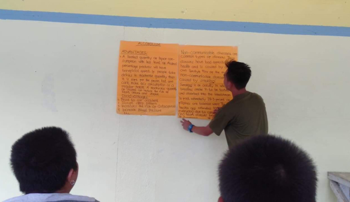

Hi everyone thank you so much for visiting my site.
My name is Maruel T. Sumayang, I am 17 years old and I currently live at Guadalupe Cebu City. My hobbies are playing basketball and playing ML. I am the oldest among the family but still the cuttiest. I am taking up a strand Humss in University of Cebu Pri. My motto in life is Don't compare time from gold because time are more precious than Gold. And I thank you!💗💗💗
ICT Project

SMOKE AND ALCOHOL PREVENTION
LOCATION: Babag National Highschool
ADDRESS: Babag, Maling Cebu City
NUMBER OF PARTICIPANTS: 4
FEEDBACK
ATTENDEE: Japoy Mabini
AGE: 15
What did you realize after?
- I am now thinking twice before drinking alcohols,because I now know the bad side effects of it.
How can you help yourself ?
- I should stop drinking alcoholic drinks to avoid being addicted.
Rate the seminar from 1-10.What did learn so far?
- I would rate it 10, because I've learned the bad side effects of alchohol.
FEEDBACK
ATTENDEE: ELMER BORRES
AGE: 18
What have you realize after taking the seminar?
- After taking smoke/alcohol it's not good to our health.
How can you help yourself being addicted?
- Stay away from some friends whose being bad influence or those friends do smoke/ drink alcohol.
Rate the seminar from 1-10.What have you learn so far?
- 10, I learn that taking and using alcohol and smokr is not good for our health.
FEEDBACK
ATTENDEE: Menard Abella
AGE: 16
What have you realize after taking the seminar?
- I realize that smoking and drinking alcoholic drinks are bad.
How can you help yourself being addicted?
- Avoid smoking and getting drunk.
Rate the seminar from 1-10.What have you learn so far?
- I would rate it 10, because I've learned the bad side effects of alchohol.